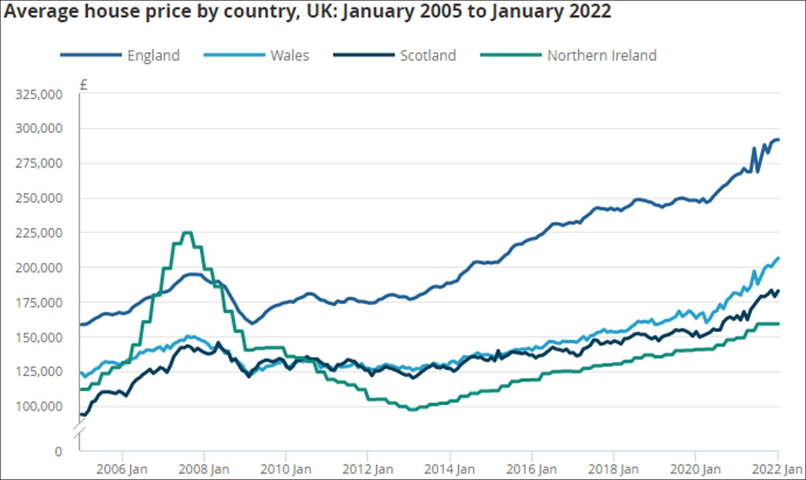
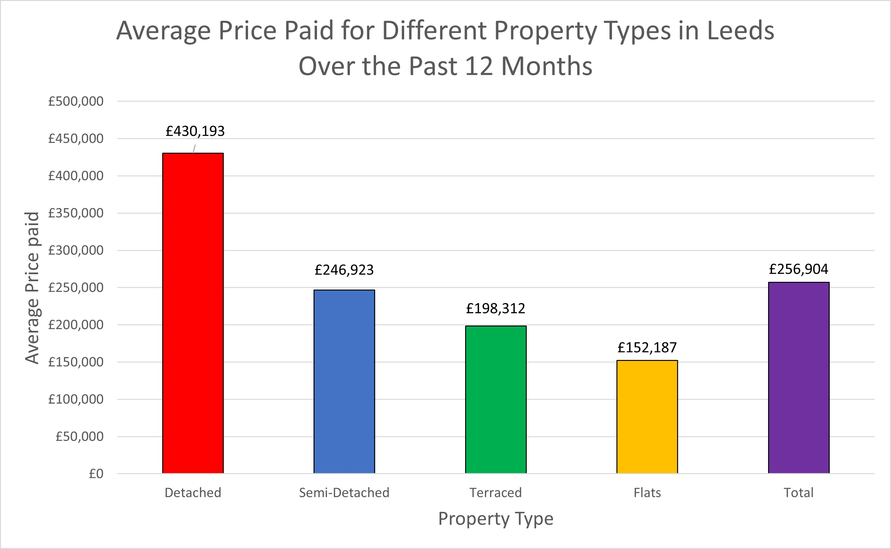
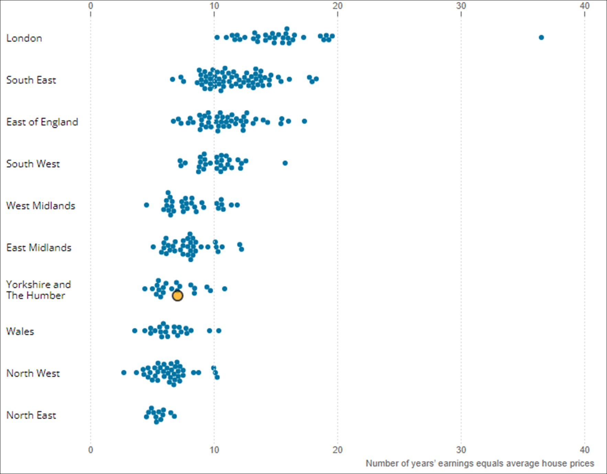

Leeds Housing Market
Residential property prices have been increasingly rapidly throughout the UK mainly due to Coronavirus however, property prices have been steadily increasing for decades. The last recorded house price in the UK was £274,000, recorded in January 2022, which was £24,000 higher than the previous year (ONS, 2022b).

Graph showing the average house price over time for England, Wales, Scotland and Northern Ireland (ONS, 2022a).
In Leeds, the mean property price that sold over the past 12 months was recorded at £256,904, which is only slightly lower than the UK average. The mean price for a detached house is significantly higher therefore, the avergae house price matches most closely with Semi-Detached houses.

Bar chart showing the average price paid for different property types across Leeds (Zoopla, 2022).
For first-time buyers, the property market can be difficult. To acquire a loans for a mortgage, your loan-to-income ratio is examined (Tilley, 2022). This is how much you earn compared to the mortgage loan. The current maximum amount (there are variations/exemptions to this) of loan is approximately 4x times the annual income (Tilley, 2022). This becomes extremely problamatic because, the average property price in Leeds is £256,904, meaning an annual income of £50,000 is needed to acquire the loan without any deposit/savings. For many individuals and families, the annual income in Leeds and the UK is almost half this amount. Therefore, significant amount of savings are needed to afford buying a house and with rising house prices, this is creating extreme strain on people entering the housing market (i.e. first-time buyers) and reducing the overall affordability of residential properties.
